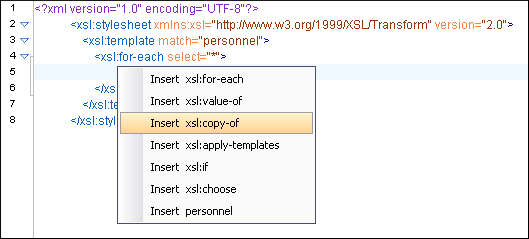
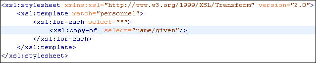

XSLT Input View
The structure of the XML document associated to the edited XSLT stylesheet is displayed in a tree form in a view called the XSLT Input view. If the view is not displayed, it can be opened by selecting it from the menu. The tree nodes represent the elements of the documents.
If you click a node in the XSLT Input view, the corresponding template
from the stylesheet is highlighted. A node can be dragged from this view and dropped in the
editor area for quickly inserting <xsl:template>,
<xsl:for-each>, or other XSLT elements that have the
@match,@select, or @test attribute already
completed. The value of the attribute is the correct XPath expression that refers to the
dragged tree node. This value is based on the current editing context of the drop spot.
Example:
<personnel>
<person id="Big.Boss">
<name>
<family>Boss</family>
<given>Big</given>
</name>
<email>chief@oxygenxml.com</email>
<link subordinates="one.worker"/>
</person>
<person id="one.worker">
<name>
<family>Worker</family>
<given>One</given>
</name>
<email>one@oxygenxml.com</email>
<link manager="Big.Boss"/>
</person>
</personnel><?xml version="1.0" encoding="UTF-8"?> <xsl:stylesheet xmlns:xsl="http://www.w3.org/1999/XSL/Transform" version="2.0"> <xsl:template match="personnel"> <xsl:for-each select="*"> </xsl:for-each> </xsl:template> </xsl:stylesheet>
if you drag the <given> element and drop it inside the
<xsl:for-each> element, the following pop-up menu is displayed:

if you select Insert xsl:copy-of (for example), the resulting document will look like this:
